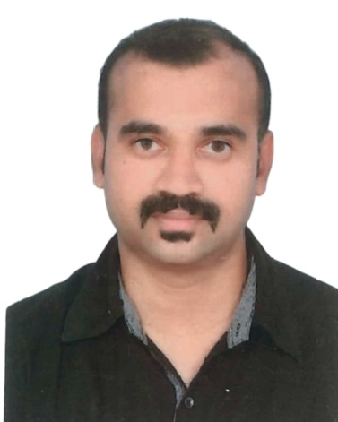

Aijas Pachayi
Hello! My name is Aijas Pachayi. "I am a project coordinator in a facade installation company, specializing in curtain wall facade, skylight, spider glass, wall cladding, door, and window installation projects. I have been working in this field since 2007.". In my free time, I enjoy watching movies, reading, and cooking.
Here are some of the projects I've worked on:
Project 1: Renovation and Development of Ministry complex Building. Learn more
Project 2: Hessah AL Mubarak Plot-160 . https://hessah.com/
Project 3: Al Adan Hospital Expansion . Learn more
Email: aijaspachayi@gmail.com
Phone: +96594405470
LinkedIn: aijaspachayi
Twitter: aijaspachayi